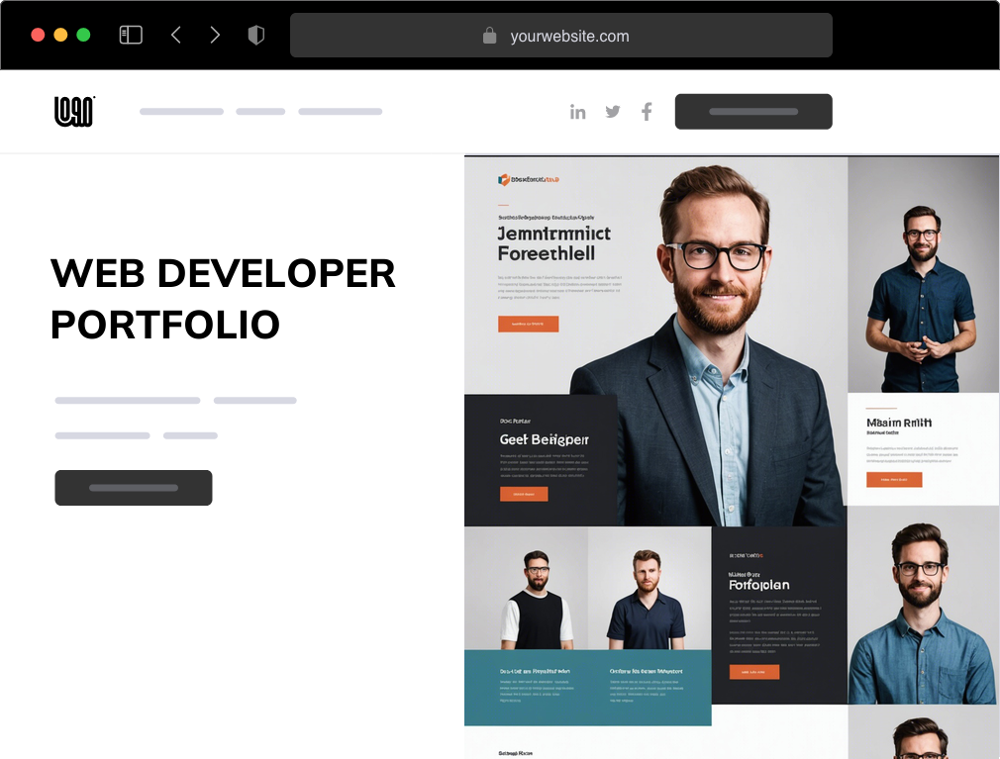

Resources
At IndiBuild, we understand the challenge and want to provide you with the tools and guidance for a seamless experience. Below is a curated list of resources to help you:
- Build your first portfolio with confidence
- Learn new skills to enhance your work.
- Get inspired by why portfolios are important
Whether you're just starting out or looking to refine your existing portfolio, we’ve got you covered.
Guides
Since building a portfolio might be new to you, we have put together a set of guides to help you learn how to use Indibuild. We hope these guides are helpful in getting you started. If you have any questions, feel free to reach out to us here.
-
InformationalThe What and Why on Portfolios
An introduction to portfolios — what they are, why they matter, and examples to help you better understand their purpose.
Start -
TutorialGetting Started
Learn how to use the Indibuild tool to start building your own portfolio step-by-step.
Start -
InformationalBest Practices
Discover best practices for creating an effective portfolio and learn how to refine and improve your own work.
Start - Tutorial

Educational Content
- Displays your work in a professional way to potential employers.
- Can be a requirement for jobs during the hiring process. Examples being art and writing related jobs.
- Good for any industry allowing you to show of your skills and work.
- Portfolios go alongside having letters of reccomendations and your resume.
- Its good to have personal references within your portfolio. They can be a deciding factor between you and another candidate.
- Prepares you for interveiws.
- Can be used during interveiws to reference skills and projects.
- Resume, biography, and a list of skills should be located near the start of the portfolio.
- Important items should be located near the start of the portfolio while less important information should fall towards the end.
- Should be visually appealing and have a consistent design.
- Future portfolios can be created off of one portfolio to target different jobs.
- Showcases a variety of information that is uniquely yours.
- Contains everything that you are capable of doing.
- Not only help you get a job bue allow for development in your own companies and carreer development.
- Organizations want to keep your talent to themselves, portfolios allow you to take it back.
- The resume gives a detailed summary of your professoinal,personal,and educatonal experiences.
- Resumes are usually only a page in length and aims to get the recruiters attention.
- Resumes should also be customized to each individual job application.
- curriculum vitae are focused on your carreer and personal details, and carreer goals.
- curriculum vitae also focus on past acheivements, and education.
- A CV is usually two or more pages and arent custom to each application.
- A CV can act as a backlog to all the work you have done including awards and certfications
- Portfolios are usually made of a collection of your work
- Portfolio are used to demonstrate skills, and talents.
- curiculum vitae are focused on credential while a resume focuses on competency.